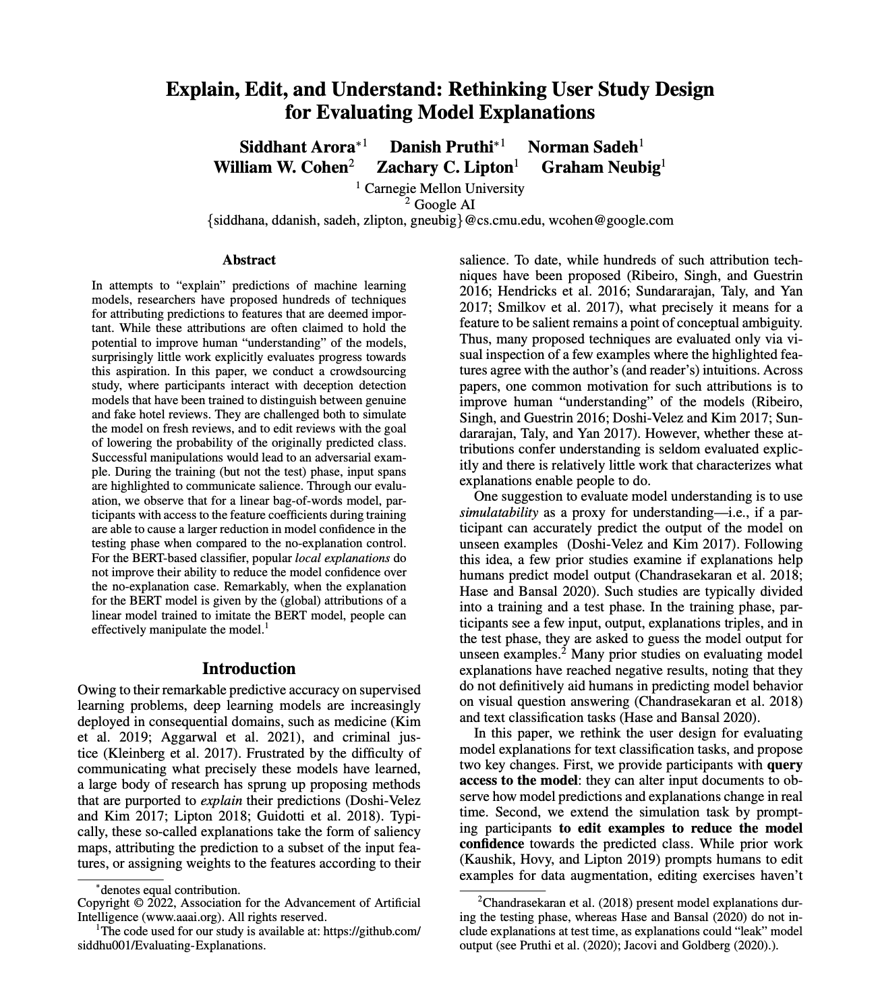

|

[Paper]
|
|
Citation
Arora, S. and Pruthi, D. and Sadeh, N. and Cohen, W.W. and Lipton, Z.C. and Neubig, G. 2022.
Explain, Edit, and Understand: Rethinking User Study Design for Evaluating Model Explanations.
In AAAI Conference on Artificial Intelligence (AAAI-22).
[Bibtex]
@inproceedings{arora2022explain,
title={Explain, Edit, and Understand: Rethinking User Study Design for Evaluating Model Explanations},
author={Arora, Siddhant and Pruthi, Danish and Sadeh, Norman and Cohen, William W. and Lipton, Zachary C. and Neubig, Graham},
booktitle={In 36th AAAI Conference on Artificial Intelligence},
year={2022}}
|